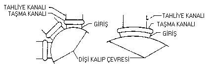
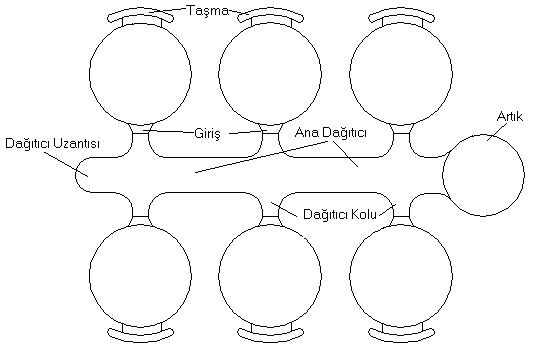
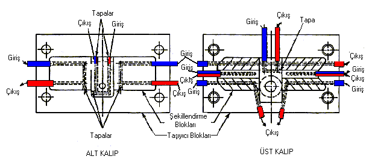

|
Tahliye
kanallarý;
Basýnçlý
döküm kalýplarda hava tahliyesi þarttýr. Tahliye kanallarý
kalýbýn ayýrma çizgisi üzerine iþlenir. Tahliye kanalý Þekil
10 ve 11'deki gibi genellikle ergiyik alaþýmýn havayý sýkýþtýracaðý
yerde veya giriþin karþýt tarafýna açýlýr. Bazý tahliye kanallarý
kýzaklarýn etrafýna hareketli maçalarýn ve iticilerin üzerine
açýlýr (8).
Taþma
kanallarý;
Taþma
kanallarý, basýnçlý döküm yapmada önemli rol oynayan tahliye
sisteminin bir parçasýdýr. Doldurulmasý güç olan diþi kalýplarýn
çukurlarýna ergimiþ alaþýmýn akmasýný kolaylaþtýrýr (Þekil
10-11) (8).

Þekil 10. Taþma ve tahliye kanalýna örnek diþi kalýp yerleþimi

Þekil 11. Taþma ve tahliye kanalýna örnek parça yerleþimi
Basýnçlý
döküm kalýplarýnda soðutma;
Basýnçlý
döküm makineleri her ne kadar belirli zaman aralýðýnda daha
önceden tespit edilen sayýda parça dökümü için ayarlanmýþ
ve kalýp ýsýnmalarý göz önüne alýnmýþsa da, kalýplarýn bazý
kýsýmlarý diðer taraflarýna nazaran daha fazla sýcaklýk çeker.
Bu kýsýmlar soðutma suyu kullanýlarak istenilen sýcaklýða
düþürülür. Þekil 12'deki gibi soðutmayý gerektiren bölgelere
su, kalýp bloðuna delinen delikler veya açýlan kanallarla
iletilir. Delinen su deliklerinin kalýp yüzeyine 20 mm den
yakýn olmamasý tavsiye edilir. Bununla beraber sakýncasý olmayan
hallerde kanallar, maça yahut boþluk yüzeylerine 6 mm kalýncaya
kadar yaklaþabilir. Uygun soðutma sadece imalat kolaylýðý
için deðil ayný zamanda iþ parçasýnýn yüzey kalitesinin iyi
olmasýna ve kalýp ömrünün artmasýna yardýmcý olur (8).

Þekil 12. Soðutma kanallarýna örnek kalýp kesiti
Kalýp
yapýmýnda kullanýlan malzemeler; Basýnçlý döküm kalýplarýnda
yüksek sýcaklýk, basýnç gibi etmenlerden dolayý kalýpta; Isýl
yorulma, Çatlama-kýrýlma, Korozyon- Erozyon, Çökme gibi sorunlar
meydana gelebilir. Bu sorunlarý en aza indirebilmek için kalýp
çeliklerinde olmasý gereken baþlýca özellikler; 1-Yapýsal
saðlamlýk ve homojenlik, 2-Kolay iþlene bilme özelliði, 3-Sýcak
çalýþmada ýsýsal arýzalara karþý yüksek dayanýmý, 4-Çalýþma
anýnda deformasyonu önleyecek yeterlikte sertlik ve mukavemet, 5-Moleküler çatlamayý önleyecek yeteri saðlamlýk, 6-Dökülen
alaþýmýn aþýndýrýcý ve silici etkisine karþý yüksek dayanýmý, 7-Yüksek ýsý iletkenliði, 8-Çok küçük ýsýsal genleþme katsayýsý, 9-Isý iþleminde ölçüsel stabilize olmamalýdýr (9).
3-
SONUÇ VE ÝRDELEME
Sonuç
olaraktan teknolojik üretim yöntemi olan basýnçlý döküm yönteminin
avantajlarýný ve dezavantajlarýný þu þekilde sýraya biliriz.
Avantajlarý;
Metal
kalýba kýyasla çok daha karmaþýk þekilli parçalarýn dökümü
mümkündür, Kalýplar basýnç altýnda doldurulduðundan, diðer
döküm yöntemlerine kýyasla, daha ince cidarlý, "uzunluk/kalýnlýk"
oraný daha yüksek ve boyutsal hassasiyeti daha fazla olan
parçalar üretilebilir, Özellikle birden fazla boþluk ihtiva
eden kalýplar kullanýldýðýnda üretim hýzý diðer yöntemlerden
çok daha fazladýr, Dökülen parça boyutlarýnda bir deðiþim
olmaksýzýn ayný kalýptan binlerce parça üretilebilir, Daha
ince kesitlerin dökülebilmesi, metal maliyetini azaltýcý bir
husus olmaktadýr, Basýnçlý döküm ürünleri genellikle çok az
bir yüzey bitirme iþlemi gerektirirler, Bazý alaþýmlar (örneðin
Al esaslýlar) basýnçlý döküm yöntemi ile üretildiklerinde,
diðer döküm yöntemlerine nazaran çok daha yüksek mekanik özellikler
gösterirler (2).
Dezavantajlarý;
Döküm
boyutlarý sýnýrlýdýr, döküm aðýrlýðý ender olarak 23 kg'ý
aþar ve genellikle 4-5 kg. civarýndadýr, Kalýp dizaynýnda
dökülecek parçanýn dolayýsýyla yolluklarýnýn ve hava kaçýþ
yollarýnýn yapýmý ve yerinin seçimi büyük önem taþýr; zira
bu faktörlere baðlý olarak kalýp içerisine hava sýkýþmasý
söz konusu olabilir ve hap solan havada gaz boþluklarýna neden
olabilir, Komple bir basýnçlý döküm makinesi (ana pres, yardýmcý
cihazlar ve kalýplar) oldukça pahalýdýr. Bu nedenle yöntemin
ekonomik bir deðer ifade edebilmesi ancak çok sayýda parça
üretimi ile mümkündür, Birkaç istisna dýþýnda, ergime sýcaklýklarý
bakýr esaslý alaþýmlarýn ergime sýcaklýklarýndan daha yüksek
olan alaþýmlar basýnçlý döküm yöntemiyle üretilemezler (2).
KAYNAKLAR
1-
ERÝÞKÝN, YAKUP, Hacim Kalýpçýlýðý, Ankara, Yüksek Teknik Öðretmen
Okulu yayýnlarý, Mart. 1980
2- N.ÇAVUÞOÐLU, ERGÝN, Basýnçlý Döküm Teknolojisi I, stanbul
Teknik Üniversitesi Matbaasý, Gümüþ suyu, 1981
3- DOEHLER, H . H ., Çeviren: BAYVAS, M . ÞEVKÝ, Basýnçlý
Döküm, Ankara Erkek Teknik Yüksek Öðretmen Okulu Matbaasý,
Ankara, 1974.
4- ÇÝÐDEMOÐLU, MACÝT, Basýnçlý Döküm Cilt 1, Makine Mühendisleri
Odasý, Ankara, 1972.
5- ÇAPAN, ONUR, Basýnçlý Döküm Kalýplarý, Araþtýrma
6- UZUN, ., -ERÝÞKÝN, Y., 1982, Hacim Kalýpçýlýðý, Milli Eðitim
Basým Evi, stanbul 1984.
7- ERDEM, . HAKKI, 1964, Basýnçlý Döküm Kalýplarý, Mühendis
ve Makina, Þubat, Cilt-7, Sayý79, Sayfa20
8- J . KLUZ, Çeviren: GIYASETTÝN, ERCÝ, Plastik ve Metal Döküm
Kalýplarý, Milli Eðitim Bakanlýðý Etüd. ve Programlama Dairesi
Yayýnlarý No . 72.
9- HATMAN, AZÝZ, 1997, Sýcak Ýþ Kalýplarýnda Ömür Artýrýcý
Önlemler, Metal Makina Dergisi, Ay-Ekim, Yýl-1997
Ýlgili
rapor: Basýnçlý
metal döküm alaþýmlarý
|